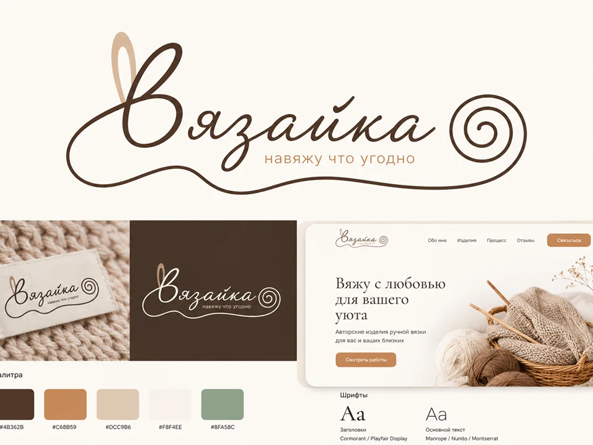
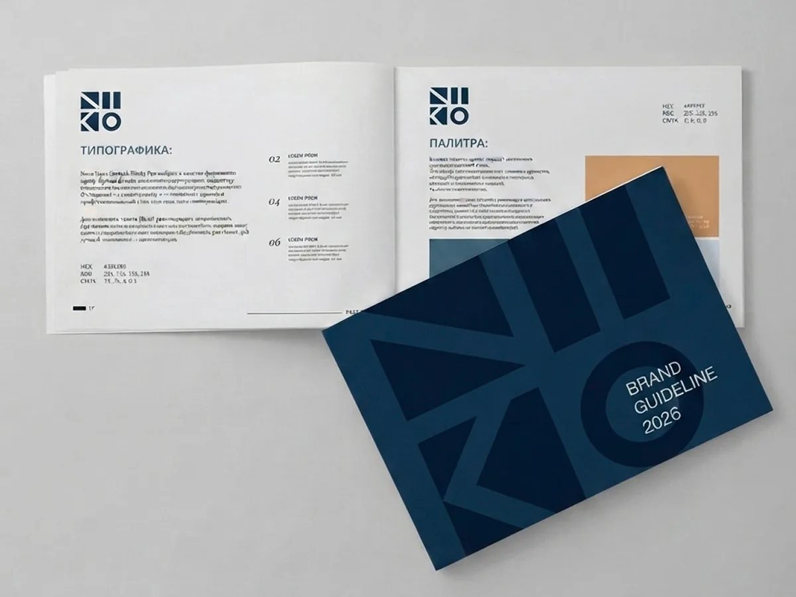

Айдентика и брендинг
Вязайка
Полная айдентика и сайт-визитка для бренда вязаных изделий
Смотреть сайт →


Айдентика и брендинг
Полная айдентика и сайт-визитка для бренда вязаных изделий
Смотреть сайт →

